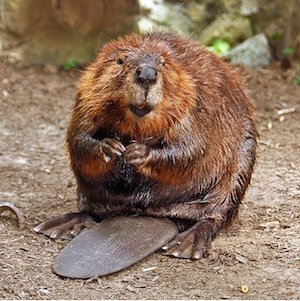

Beaver
Beavers are known for building dams, canals and lodges. They are nature's environmental engineers.
Scientific Name: Castor
Average Length: 80 centimeters
Average Lifespan: 24 years
Habitat: riparian zone and stream beds
The beaver (genus Castor) is a primarily nocturnal, large, semiaquatic rodent. Castor includes two extant species, the North American beaver (Castor canadensis) (native to North America) and Eurasian beaver (Castor fiber) (Eurasia).